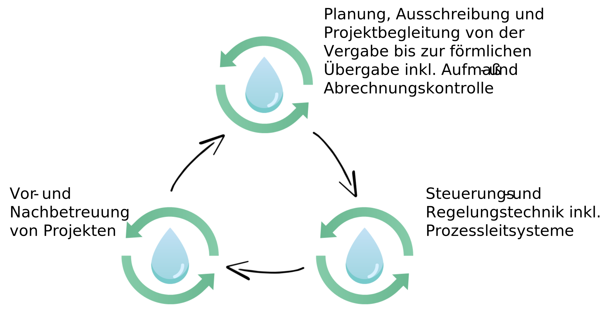

Tätigkeitsbereich
Der Schwerpunkt der Firma MTS Management Technik Systeme GmbH & CO KG liegt in der elektrotechnischen Ausrüstung, Betreuung und Überprüfung von umwelttechnischen Anlagen im Bereich von kritischer Infrastruktur, beispielsweise Wasserversorgungsanlagen oder Abwasserreinigungsanlagen.
Die elektrotechnische Ausrüstung umfasst dabei Elektro-, Mess-, Steuer- und Regelungstechnik, sowie modernste Prozessleitsysteme, gebündelt aus einer Hand.
Unsere Kernkompetenzen liegen in der Planung, Ausführung und Nachbetreuung von Projekten, Datenerhebungen, Kostenschätzungen, Analyse bestehender Anlagen, Konzepterstellung auf Basis mehrerer Umsetzungsvarianten, regelmäßige Anlagenüberprüfung und Anpassung bestehender Anlagen an den Stand der Technik, sowie die elektrotechnische Ausrüstung von neuen Anlagen.
Ziele und Herausforderungen
Besonders im Bereich von kritischer Infrastruktur ist es das oberste Ziel geringe Betriebskosten bei gleichzeitig hoher Anlagenverfügbarkeit und Zuverlässigkeit für unsere Kunden zu realisieren und nachhaltig zu erhalten. Dieser Verantwortung sind wir uns als Unternehmen bewusst und durch unsere technische Expertise könne wir die optimale Zielerreichung, unter Berücksichtigung der Kundenwünsche und Anforderungen, anbieten
Aufgrund unserer 35 jährigen Tätigkeit im Bereich der Umwelttechnik können wir unseren Kunden garantieren, die Energie so zu lenken, dass diese in einem wirtschaftlich größtmöglichen Ausmaß für sie nutzbar ist.
Ständige Aus- und Weiterbildung, sowie ein hochqualifiziertes Team ermöglichten uns bereits zahlreiche erfolgreich umgesetzte Projekte österreichweit. Einen Auszug dieser finden Sie unter dem Menüpunkt Referenzen.
Kontakt
Haben wir Sie überzeugt und Ihr Interesse geweckt? Treten Sie mit uns in Kontakt. Wir freuen uns neue Herausforderungen gemeinsam zu lösen.
Management Technik Systeme GmbH & CO KG
Augasse 2
3250 Wieselburg

 +43(0)741654005-0
+43(0)741654005-0
{kind=link}